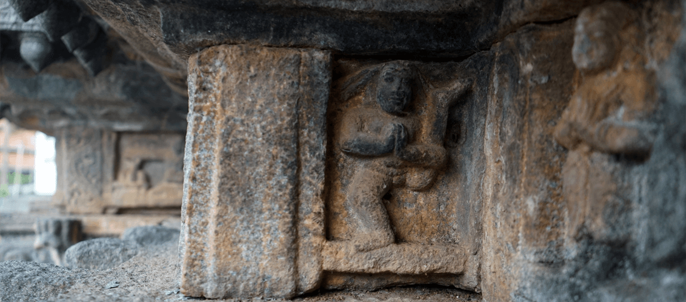

RESOURCES
The Modern Yoga Research website collates and presents information about established and current research into modern yoga and, more generally, about some of the most informative research on earlier forms of yoga.
This website is associated with the INDOLOGY online discussion forum for Classical South Asian studies that has existed since 1990 as a medium for exchange and debate by university-level scholars in Classical Indian Studies.
Entangled Histories of Yoga, Ayurveda and Alchemy in South Asia
The project examines the histories of yoga, ayurveda and rasaśāstra (Indian alchemy and iatrochemistry) from the tenth century to the present, focussing on the disciplines’ health, rejuvenation and longevity practices.
This is the blog of Jason Birch and Jacqueline Hargreaves. It contains articles on their historical research on yoga as well as their thoughts on contemporary yoga practice.
ÉCOLE FRANÇAISE D’EXTRÊME-ORIENT
The EFEO Centre provides a setting for a Library of Indology (about 11 000 titles), and houses a collection of maps and drawings, as well as manuscript texts on palm leaves in Sanskrit, Tamil, and Manipravalam. In 2005, “The Shivaite Manuscripts of Pondicherry”(EFEO-IFP) were entered in the UNESCO “World Memory” register at the joint request of EFEO, IFP and the National Mission for Manuscripts of the Indian Government.
Perso-Indica is a research and publishing project that will produce a comprehensive Analytical Survey of Persian Works on Indian Learned Traditions, encompassing the treatises and translations produced in India between the 13th and the 19th century.
PHOTO ARCHIVES
This archive documents Indian mendicants or Sadhus, mostly Hindu, but including some Jain practitioners, in the later 20th century in northern India. The images were taken by Dolf Hartsuiker over many years, from the 1970s onwards.
SMITHSONIAN GALLERY – YOGA: THE ART OF TRANSFORMATION
Through masterpieces of Indian sculpture and paintings, this exhibition explores yoga’s goals; its Hindu, as well as Buddhist, Jain, and Sufi manifestations; its means of transforming body and consciousness; and its profound philosophical foundations.
This digital collection includes more than 40,000 photographs of art and architecture from throughout Asia.
DIGITAL TEXT ARCHIVES
DIGITAL LIBRARY OF INDIA (DLI)
Digital Library of India (DLI) is a digital collection of freely accessible rare books collected from various libraries in India.
Here you will find electronic editions of texts in Sanskrit and other Indian languages. These are documented, dated and have embedded notes about their change history, so that they can be publicly cited and used with confidence as scholarly sources.
Göttingen Register of Electronic Texts in Indian Languages and related Indological materials from Central and Southeast Asia.
Muktabodha Digital Library: Consisting of three separate collections. The first is newly added Vedic Manuscripts of Gokarna collection. The second is an on-line searchable digital library of rare Sanskrit texts, initially focused on Kashmir Shaivism, then broadening to Trika-Kaula, Saiva-Siddhanta, Pancaratra, Natha Yoga and other tantric works and the third is the Transcripts of the French Institute of Pondicherry, which is a collaborative project with the IFP and EFEO.
To protect, preserve, and disseminate the ancient and contemporary Jain literature, the Jain Education International organization in cooperation with Shri Mahavir Ardhana Kendra, Koba Ahmedabad; and Shri Prachya Vidyapith, Sajapur, India has launched a Jain eLibrary project.